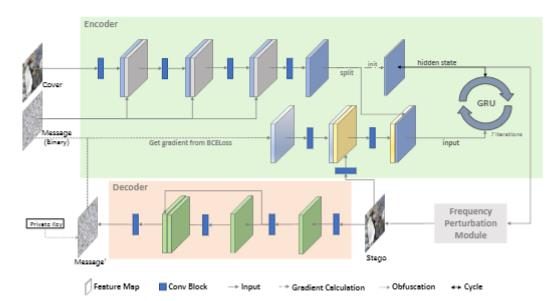
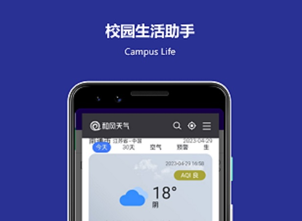

Hello 我是汪欣晨
一个没什么追求的人
蓑笠不惊云起落 卧看江月去还来 烟雨平生竹杖客 松风煮雪即吾乡
技能展示
前端开发
HTML, CSS, JavaScript, Bootstrap, Vue3, Vite
后端开发
Django, MySQL, MongoDB, Redis, REST APIs
移动开发
原生Android(Java), Responsive Design
游戏开发
Unity, C#
嵌入式开发/数字电路设计
STM32, C, C#; Xilinx, Verilog
其他
Pytorch, Matlab, Git, Linux ...
阅读分享
典型项目

Frequency-Guided Iterative Network for Image Steganography
迭代循环的图像隐写网络架构, 集成先进的频率引导模块与轻量级注意力机制。
